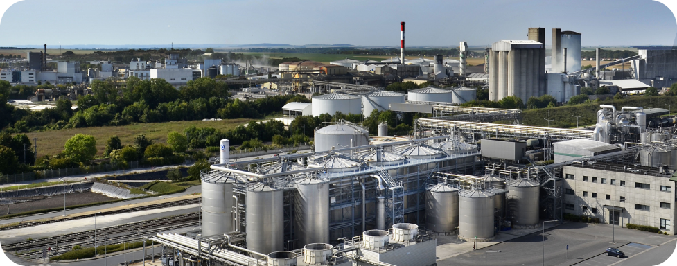

En Argentina, en la estancia “Las Cabezas” realizamos la actividad ganadera de ciclo completo, produciendo anualmente más de 1.000.000 de Kilos de carne vacuna. Contamos con aproximadamente 10.000 cabezas de ganado (4500 Vientres).
.png)
El planteo productivo tiene a la eficiencia y tecnología como principales drivers, trabajando con caravana electrónica y recopilación de datos para lograr la mayor trazabilidad, pastoreo rotativo intensivo en pasturas base alfalfa, y una terminación bajo un sistema de “Parques de invernada” que aseguran el bienestar animal.
.png)
El rodeo se compone de las razas Hereford y Angus, participando la cabaña de ambas asociaciones, y con un plan de desarrollo genético ambicioso, con foco en la eficiencia productiva y calidad del producto.
 Etiquetado electrónico
Etiquetado electrónicoEn materia de sustentabilidad nos encontramos midiendo la Huella de Carbono de producto, con el fin de lograr la certificación incorporando valor adicional al producto.
.png)
Es nuestro objetivo integrarnos en la cadena de valor buscando exportar de manera directa a los mercados más exigentes.
Es objetivo de la empresa integrarse en la cadena buscando exportar de manera directa o asociada carne certificada en medición de huella de carbono.
Es objetivo de la empresa integrarse en la cadena buscando exportar de manera directa o asociada carne certificada en medición de huella de carbono.
Es objetivo de la empresa integrarse en la cadena buscando exportar de manera directa o asociada carne certificada en medición de huella de carbono.
 25T de acopio
25T de acopio 50T de producción anual
50T de producción anualEn la década de 1970 la familia Ferruzzi adquirió la estancia “Las Cabezas”, una propiedad que posee una extensión cercana a las 20.000 hectáreas y está ubicada en Gualeguay, sur de la provincia de Entre Ríos, Argentina. La misma es gestionada bajo la firma Entre Ríos S.A.

Con alrededor de 16.000 hectáreas de cultivo, en la división de agricultura nos dedicamos al cultivo de diversos productos, como trigo, arveja, soja, maíz y sorgo. Crecimos en los últimos años en la incorporación de cultivos especiales como Lupino, Colza, maíz Flint, entre otros, a través de acuerdos con empresas de primera línea; a la vez que incursionamos en la producción de semillas de maíz, incorporando sistemas de riego como parte de un proyecto de crecimiento a largo plazo.
.png)
La operación de agricultura está integrada, contando con parque de maquinaría propio, y una Planta de Acopio con capacidad de 25.000 toneladas, que permite agregar valor a más de 50.000 toneladas que son producidas anualmente.


La empresa está activamente involucrada en la producción de semillas con planes de expansión a alrededor de 2,000 hectáreas irrigadas.
Con el objetivo de procesar arvejas, maíz pisingallo y otras especialidades para exportación.
La exploración continua de nuevos cultivos, como la canola y el lupino, se alinea con el compromiso de la empresa con la sostenibilidad y el desarrollo a largo plazo del negocio.
Es objetivo de la empresa integrarse en la cadena buscando exportar de manera directa o asociada las especialidades producidas en nuestros campos.
Las iniciativas incluyen entre otras la búsqueda de certificaciones CRS y RT RS para la sostenibilidad en la soja
Las prácticas de agricultura de precisión, la aplicación de tecnología en el manejo de pastizales y la siembra y fertilización variables muestran nuestro compromiso con los avances tecnológicos.
 Biomasa
BiomasaFersam Energía es nuestra más reciente unidad de negocio. Impulsados por la necesidad de acelerar el proceso de descarbonización del mundo decidimos involucrarnos en la promoción, desarrollo, inversión y gestión de proyectos de energías limpias.
Construcción de planta de producción de Nitrato de Amonio verde, a través de energía hidroeléctrica. Modelo de negocio verticalmente integrado con foco exportador.
País: Paraguay | Inversión estimada: Usd 1.141 MM | Partner tecnológico: Maire Tecnimont Producción estimada: 1.380 toneladas por día de Nitrato de amonio (fertilizante)
Desarrollo de Empresa de Servicio de Energía (ESCO) en base a Biomasa. Modelo de negocio BtoB - térmicos industriales. Paises: Argentina y Paraguay
Acompañando la evolución tecnológica, hemos decidido involucrarnos en el acompañamiento e inversión de startups de Agtech.
.png)
Ponemos a disposición de emprendedores nuestro know how, activos y plataforma de negocios, para potenciar su crecimiento y acompañarlos activamente en su desarrollo. El Grupo forma parte del Fondo de Venture Capital Innventure, el cual se focaliza en inversiones en Agtech y tecnologías vinculadas a la cadena de alimentos.